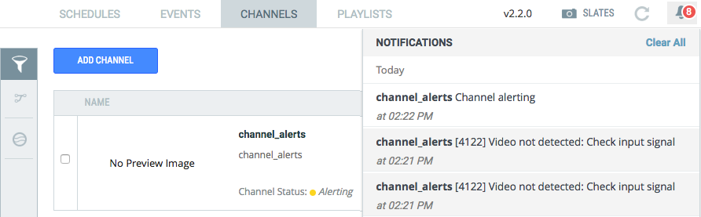

New Features and Enhancements
Segment snapping when trimming Live to VODFor customers editing live streaming content for VOD, previously, when a Live to VOD video was trimmed, the UI let them set trim values to the second. This gave the impression that the VOD platform would accept trim values to that accuracy, which it does not. Now, trimming snaps to the segment boundaries of the associated Live channel's encoding profile. This new feature is automatically applied when you trim video content.
To modify a channel's encoding profile (often 6 or 10 seconds), contact Ooyala Support.
Notifications Improvement
For monitoring their channels for alerts on channels with Ooyala Encode and Ooyala Package, Ooyala Live has a new channel status called 'alerting'. This status is activated when there are any alert conditions. This new feature is automatically applied. You do not need to modify a channel's profile.

Alerts are captured from Encoder and Packager and displayed in the notifications area. When the alert is resolved (automatically or by human intervention) the channel returns to 'running' state.
Typical alert conditions could include:
This feature facilitates improved debugging. Further debugging information has also been added to email notifications. In case of an issue, provide the debugging information in the email to Ooyala Support.
Known Issues